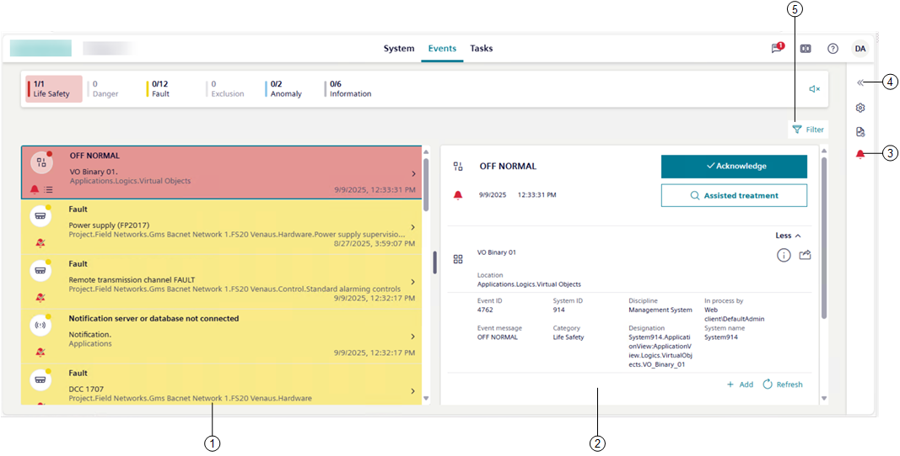

Events Workspace
When Events is selected in the horizontal navigation bar, event handling becomes available in the main work area of the application.
From here you can deal with the all the detected events, with each one on a separate row. For instructions, see the step-by-step section.

1 | Event list area. |
2 | Event details area, including commands and other event-related functionalities. |
3 | The event status icon lets you open the event overlay for the selected active event, which lists any other event related to the same event source. |
4 | This icon lets you open the properties of the object in alarm in the right panel. For more details, see Properties of the Event Source. |
5 | This icon lets you filter the events in the list by multiple criteria. For instructions, see Filter by Multiple Criteria Simultaneously. Note that on small screens devices, depending on the screen size and orientation, the Filter icon is visible top right of event details or available from the vertical ellipsis icon . |